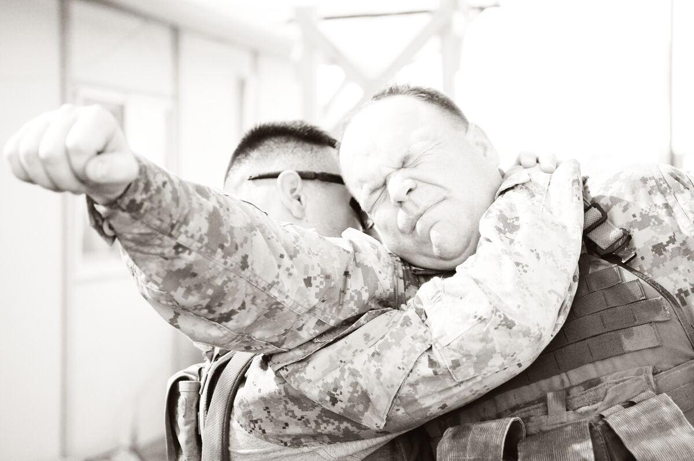

BJJ · Submission
Guillotine
The guillotine is a Brazilian jiu-jitsu front-headlock choke that wraps the opponent’s neck with your arm—finished standing or on the mat in high-elbow and arm-in variations, with deep connections to the darce and anaconda in both gi and no-gi.
What Is the Guillotine?
The guillotine wraps your arm around the opponent’s neck from a front headlock orientation and finishes as a choke (sometimes with crank elements if misapplied). It is a staple counter to shots, sprawls, and seated guard postures.
How Guillotine Works
Control the head and (often) an arm, hide your elbow/wrist in the high-percentage configuration you prefer, connect your hands, and finish by adjusting angle—falling to the side, mounting, or staying seated depending on the variant.

Gi vs No-Gi
No-gi. Primary modern home—wrestling entries feed guillotines constantly.
Gi. Still excellent; collar can assist but is not required.
Finishes. High-elbow (Marcelo-style fame) vs arm-in preferences vary by instructor; both travel across rule sets.
>What Does the Guillotine Look Like in Practice?
Jordan shoots a single; Alex sprawls, wraps the neck, locks a high-elbow guillotine, and sits to finish as Jordan tries to posture.
Types / Variations
High-elbow guillotine
Elbow points up; wrist position critical for a clean strangle.
Arm-in guillotine
Includes an arm inside the lock—often better control and transitions.
Front headlock control
The positional parent: control first, choke second.
Entries, Counters, and Escapes
Enter on sprawls, seated passes, and turtle fronts. Escape by hiding the head, peeling hands, and improving posture—tap if the choke is locked.
Guillotine vs Darce
| Factor | Guillotine | Darce |
|---|---|---|
| Arm path | Around the neck (front) | Under near armpit, across neck |
| Typical feed | Sprawl / front headlock | Side of head-and-arm |
| Family | Front headlock chokes | Same broader family |
Seated vs sprawled finishes. You can finish guillotines standing, seated in closed or open configurations, or from mount after they defend a shot poorly. Choose the finish that keeps your hips connected; arm-only squeezes are the crank path.
Chin straps and hand fights. Modern instruction debates wrist placement (high wrist / chin strap details). The encyclopedia takeaway: pick a coached finishing mechanic and drill it—do not invent arm angles under fatigue.
Gi collars. A collar can help snap the head down into a guillotine entry, but the choke itself does not require the jacket. Treat collar snaps as optional gi entry tools.
Special Considerations
IBJJF, ADCC, and sport context
Legal adult IBJJF/ADCC. Avoid neck cranks disguised as chokes in training culture—finish clean or release.
Safety
Tap to chokes. Instructors should coach clear blood-choke mechanics.
Common mistakes
- Finishing with a pure crank and calling it a choke.
- No body connection—only arms.
- Ignoring arm-in options when high-elbow fails.
FAQ
Questions we hear on the mats, in forums, and under instructional videos—answered in Martial Index voice.
High-elbow or arm-in—which should I learn?
Both. Many athletes prefer one finish but need the other as contingency.
Why do I only crank?
Wrist/elbow position and angle are off. Study high-percentage finishing details.
Works in gi?
Yes.
Standing guillotine legal?
Yes in typical adult sport rules; still tap early in the gym.
Good vs wrestlers?
One of the best anti-shot tools when sprawled correctly.
Front headlock vs guillotine?
Front headlock is the control position; guillotine is a choke finish from that family.
The Bottom Line
The guillotine is the front-headlock neck wrap—high-elbow and arm-in finishes dominate modern grappling. Chain it with darce and anaconda when they hide or roll.